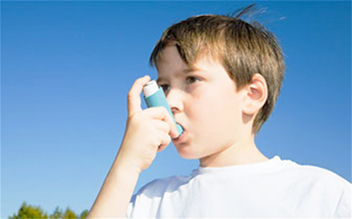

Asthma is a chronic (long-term) disease that can decrease airflow and make it hard to breathe. Episodes of airflow blockage are usually temporary and reversible. These blockages, also known as "attacks," occur when the main air passages of the lungs (bronchial tubes) become inflamed. During an asthma attack, airway muscles tighten, extra mucus is released and the airways swell. This can lead to coughing, shortness of breath, a tightened chest and wheezing. In some cases, breathing may be so difficult that an asthma attack becomes life threatening.
What causes asthma?
Researchers are not exactly sure why some people get asthma and others don't, but there are a number of factors that may increase a person's chance for developing the disease. These include:
- Living in an urban area, especially the inner city, which may increase exposure to environmental pollutants
- Smoking or exposure to second hand smoke
- Exposure to occupational pollutants including: chemicals used in farming and hairdressing, chemicals used in paint, steel, plastics and electronics manufacturing
- Having one or both parents with asthma
- Respiratory infections in childhood
- Low birth weight
- Obesity
- Gastroesophageal Reflux Disease (GERD)
Who gets asthma?
More than 31 million Americans have been diagnosed with asthma at some point in their lifetime. About a third are children under age 18. Asthma may occur at any age, although it is more common in people under age 40. Asthma is more common in boys than in girls until puberty, when it is then found more commonly in females. People who have a family history of asthma have an increased risk of developing the disease. Asthma is also more common in people who have allergies or who are exposed to tobacco smoke.
What are its symptoms?
- Coughing, especially at night
- Wheezing (a high-pitched whistling sound during exhalation)
- Shortness of breath
- Chest tightness, pain or pressure
Not every person with asthma has the same symptoms. Some may not have most of these symptoms, or will have different symptoms at different times.
How is asthma diagnosed?
Diagnosing asthma can be difficult. Signs and symptoms can range from mild to very severe and are often similar to those of other conditions, including emphysema, early congestive heart failure or vocal cord problems. In order to rule out these and other possible conditions, doctors use several tests to arrive at a diagnosis. In most cases, patients are asked to give a complete medical history and have a physical exam. Lung-function tests also may be used to determine how much air moves in and out as a patient breathes.
How serious is asthma?
When it is controlled, asthma is not generally considered to be a serious illness in most people. This is mainly due to the mildness of symptoms and the range of effective medicines that control these symptoms and stop asthma from worsening.Asthma does, however, reduce quality of life because attacks can be unpleasant, distressing and can restrict activity. While most sufferers learn to live with and manage their condition, for some it can be disabling.In exceptional cases, asthma can be life-threatening, particularly if attacks are not treated adequately or promptly.
How is asthma treated?
The most effective treatment for asthma is identifying the triggers that cause attacks and limiting or eliminating exposure to them. Taking prescribed medicines and carefully monitoring daily asthma symptoms also can help people avoid or limit asthma attacks. Some medicines are meant to be taken only during an attack; others are taken daily to reduce the likelihood of attacks. A peak-flow meter can be used at home to help asthma sufferers "see an attack coming" and take the appropriate action to avoid a severe attack, sometimes even before any symptoms appear. If a person does not monitor his or her asthma on a regular basis, an attack can take the person by surprise. Treatment for a severe asthma attack requires a medical evaluation, hospitalization, oxygen and intravenous medications.There is no cure for asthma, but it can be treated and controlled. In most cases, people with asthma can live free of symptoms by following their treatment plan.